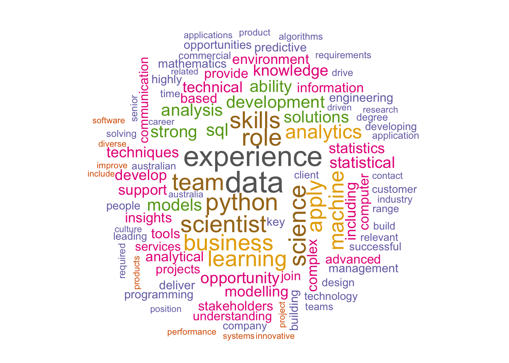
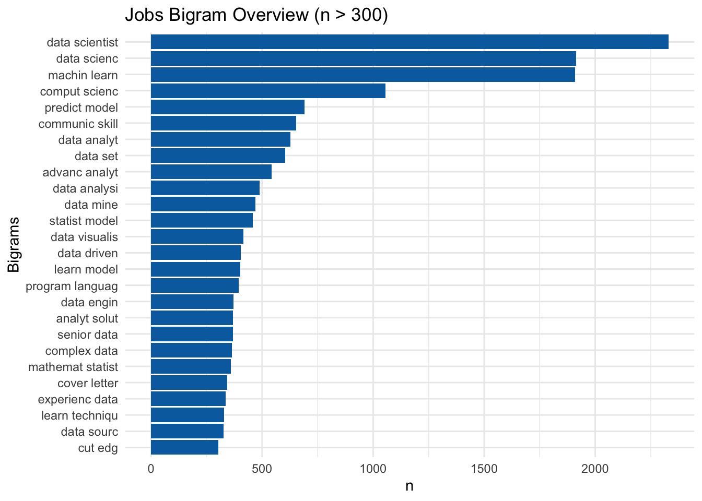
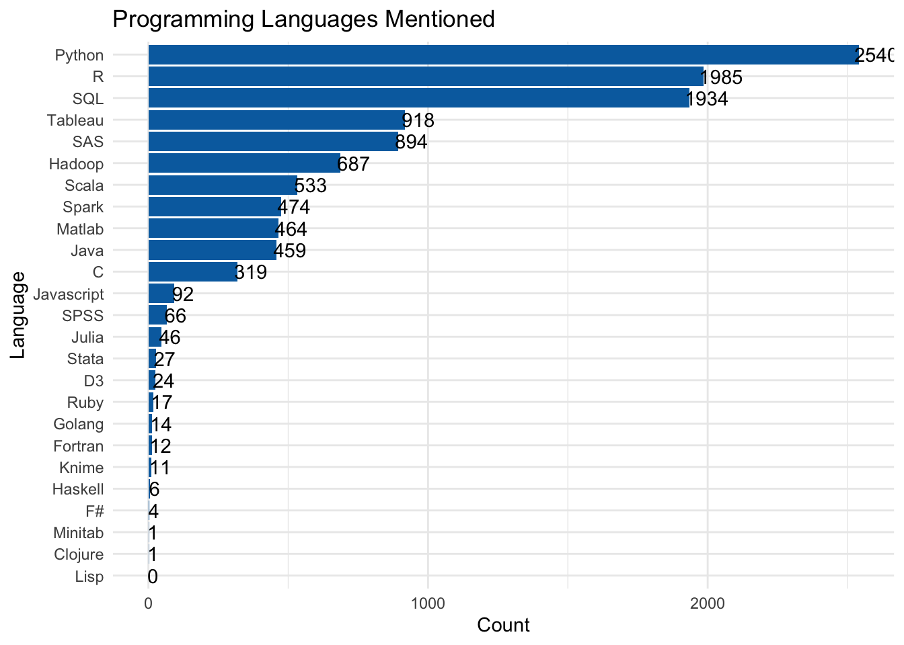

5 Job Text Analysis
To explore the skills and programming languages in demand from employers, we focused on the mobileAdTemplate [ET: describe this] and the 25 columns of programming languages. Similar to before, single word analysis, bigram, and trigram are all produced [ET: based on ?].
[ET: include a brief description of stemming]
5.1 Word Frequency

Word frequency was calculated using the same method as Section 4.2. Programming languages Python and SQL seems prominent. Potentially due to the amount of senior positions in the data, experience is mentioned a lot. In terms of other knowledge or skills, statistics, modelling, analysis are some terms that seems to be standing out. To ensure frequency is meaningful, we looked at bigram and trigram.
5.2 Bigram

For Figure 5.2, we stemmed the words before joining them into bigram in attempt to avoid under-counting. However, from the figure we can still see that some terms like data analyt and data analysi are still counted separately. From this bigram, the popular skills or knowledge mentioned are machin learn, predict model, communic skill, data analyt and data mine. Mathematical skill, mathemat statist is also mentioned quite often. Some of these terms on the list are vague and can mean be grouped together. Trigram yielded similar results as the bigram. With the same problem of under-counting the n-grams due to insufficient groupings.
5.3 Programming Languages

Figure 5.3 shows the count of each language mentioned by employers. 89% of the jobs mentioned Python, 69% mentioned R and 68% mentioned SQL. Tableau’s popularity is not a surprise given the high frequency for data visualis in the previous section.